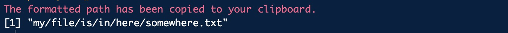

Recently, I started a new position that requires me to use a Windows computer (I miss my MacBook Air dearly). This has led me to learn about the subtle differences when using R on different operating systems.
If you are like me, you probably work with a team and handle confidential data. Many workplaces use network drives to store data securely. Often in my day-to-day work, I use files with increasingly complex file paths and read them into RStudio. If you are familiar with this process, you likely know how particular R can be about file path formatting.
R prefers file paths to be separated by forward slashes /. The default file paths in Windows, however, use backward slashes \. You could manually change each backward slash to a forward slash, or add another backward slash so that each folder is separated by two slashes. While both options work most of the time, if you do this often enough, there’s a more efficient solution!
A Function to Simplify Your Workflow
To avoid this hassle, I use a custom function to quickly import and format my file paths:
Code
# install.packages("clipr")copied_path <-function(){ out <- clipr::read_clip() # or readClipboard on Windows out <-gsub("^\"|\"$", "", out) out <-gsub("\\\\", "/", out) clipr::write_clip(out) # writeClipboard(out)message("The formatted path has been copied to your clipboard.")return(out)}
Note
I am using functions from the R package clipr because I wrote this blog post on a MacBook Air. On a Windows machine, I would use the functions readClipboard and writeClipboard from the utils package to avoid an additional dependency.
Let’s say I have a complex file path like this: “my\file\is\in\here\somewhere.txt”. I would first copy this to my clipboard from the file explorer. On a Windows machine, this copies the full path including quotation marks. When we run our function in the console, the following occurs:
Code
copied_path()

This returns the neatly formatted file path and automatically copies it to your clipboard, saving you time and effort.
How the Function Works
In R, we can read what is copied to our clipboard. This is the first step in our function. We can call it as a string using the following command:
Code
out <- clipr::read_clip()# or readClipboard() on Windows
When we copy a file path from the file explorer on a Windows machine, it includes quotation marks. Therefore, the next step is to remove these from the string using regex:
Code
out <-gsub("^\"|\"$", "", out)
We can then replace double back slashes with a forward slash. If we don’t do this, the string copied to our clipboard will retain single back slashes:
Code
out <-gsub("\\\\", "/", out)
For the final step, we copy the new string to the clipboard, send a message to the console, and return the new string:
Code
clipr::write_clip(out) # writeClipboard(out)message("The formatted path has been copied to your clipboard.")return(out)
Another Alternative
If you are using R version 4.0.0 or later, you also have the option of using a raw string constant. This is done by wrapping your text with r"()". This will return a string with double back slashes: